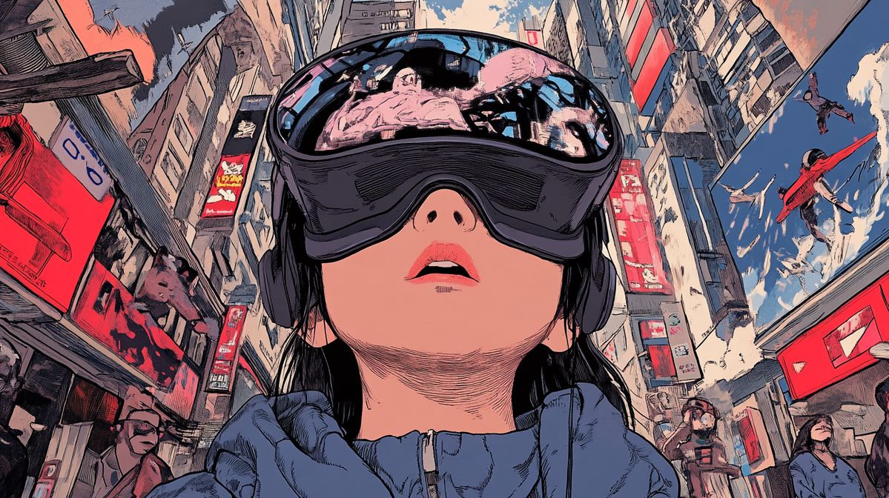
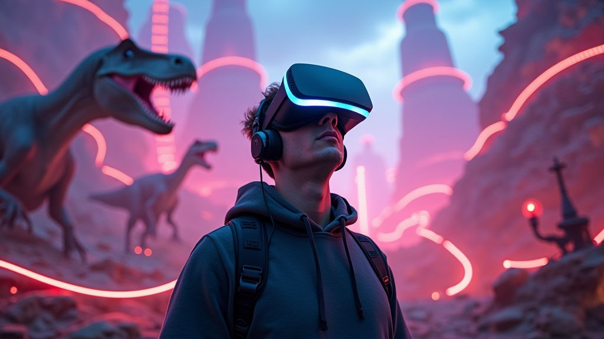
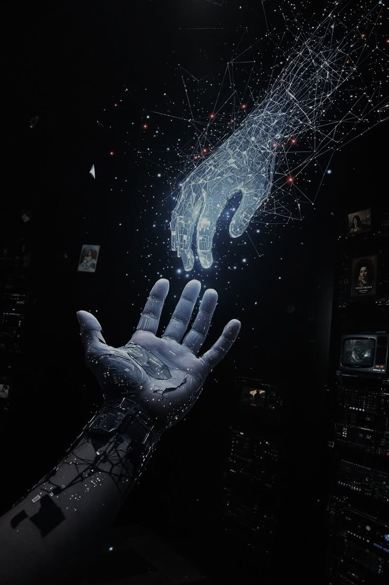
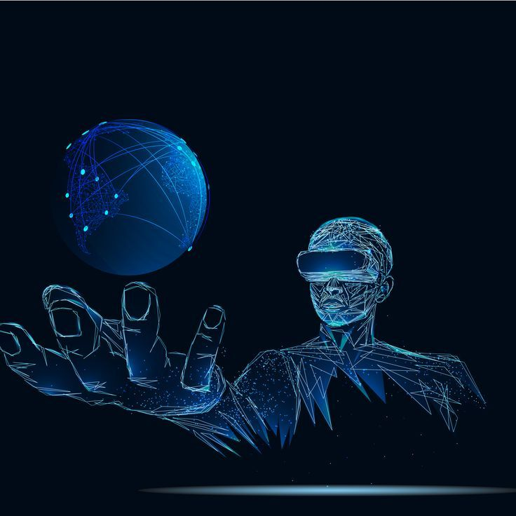

Inmersión
Permite al usuario sentirse dentro de un entorno digital mediante imágenes tridimensionales, seguimiento de movimiento y sonido.

TECNOLOGÍA INMERSIVA
La Realidad Virtual permite crear entornos digitales tridimensionales en los que el usuario puede interactuar, explorar y experimentar diferentes escenarios mediante dispositivos tecnológicos especializados.
VER MÁS01 / INTRODUCCIÓN
La Realidad Virtual (RV) es una tecnología que permite crear entornos digitales tridimensionales capaces de generar una sensación de presencia e interacción.
Mediante visores, sensores, controladores y sistemas de procesamiento, el usuario puede explorar espacios virtuales y participar en experiencias digitales.
Su aplicación se extiende a campos como la educación, medicina, industria, entretenimiento, simulación y entrenamiento profesional.

02 / CARACTERÍSTICAS
Permite al usuario sentirse dentro de un entorno digital mediante imágenes tridimensionales, seguimiento de movimiento y sonido.
Los sensores y controladores detectan los movimientos del usuario y permiten interactuar con diferentes elementos del entorno virtual.
Permite representar situaciones y escenarios que pueden utilizarse para aprendizaje, entrenamiento y experimentación.
Combina gráficos, movimiento y audio para crear experiencias digitales más realistas e interactivas.

03 / COMPONENTES
Para crear una experiencia de realidad virtual se utilizan diferentes dispositivos que trabajan conjuntamente para generar imágenes, registrar movimientos y permitir la interacción.
Presenta el entorno digital al usuario.
Registran posición y movimiento.
Permiten interactuar con el entorno.
Aumenta la sensación de presencia.
04 / APLICACIONES
Permite crear aulas virtuales, simulaciones, recorridos educativos y experiencias interactivas para complementar el aprendizaje.
Puede utilizarse para entrenamiento médico, simulaciones, visualización y determinadas actividades de rehabilitación.
Facilita la capacitación, simulación de procesos, diseño y entrenamiento en entornos controlados.
Permite crear videojuegos, experiencias interactivas y espacios digitales inmersivos.
TECNOLOGÍA INMERSIVA
05 / EL FUTURO
La Realidad Virtual continúa evolucionando junto con la inteligencia artificial, los sensores y los sistemas de interacción. Estas tecnologías permitirán desarrollar experiencias cada vez más naturales, inmersivas y adaptadas a diferentes necesidades.
